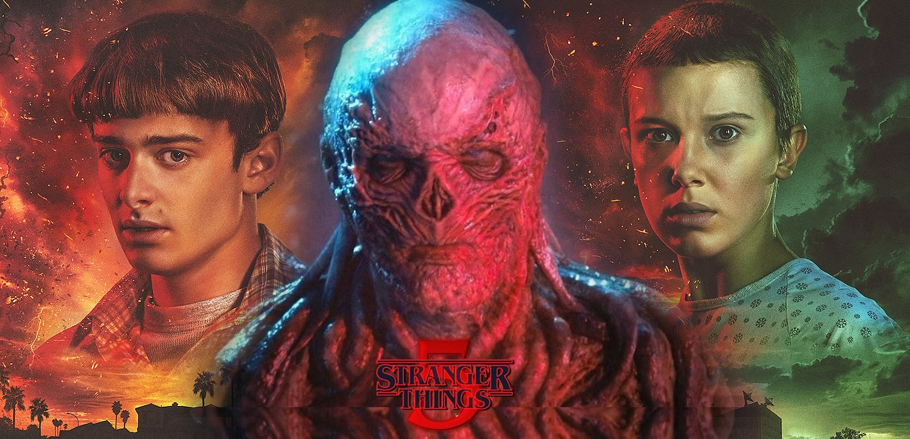

Anúncio foi feito pelos co-criadores da série, Matt Duffer e Ross Duffer, conhecidos como irmãos Duffer, pelo Twitter. 'Big Mouth' e 'Cobra Kai', também da Netflix, enfrentam pausas na produção. O filme Blade, da Marvel, foi paralisado.
A série "Stranger Things" interrompeu as filmagens de sua última temporada por conta da greve dos roteiristas de Hollywood. O anúncio foi feito pelos co-criadores da série, Matt Duffer e Ross Duffer, conhecidos como irmãos Duffer, pelo Twitter.
“Esperamos que um acordo justo seja alcançado em breve para que todos possamos voltar ao trabalho. Até então — estamos fora. #wgastrong.”
Os roteiristas de cinema e televisão de Hollywood cruzaram os braços na última terça-feira (2) após o fracasso nas negociações por aumentos salariais com estúdios de produção, como Walt Disney e Netflix.
Segundo a Variety, “Stranger Things” agora se junta a um grupo crescente de séries da Netflix, como “Big Mouth” e “Cobra Kai”, enfrentando atrasos e pausas na produção em meio à greve.
A paralisação também trouxe impactos aos programas de TV, como os talk-shows e no humorístico "Saturday Night Live". Essas atrações devem recorrer a reprises enquanto o impasse durar. Também houve paralisação nas filmagens da série "Billions" e do novo filme "Blade", da Marvel.